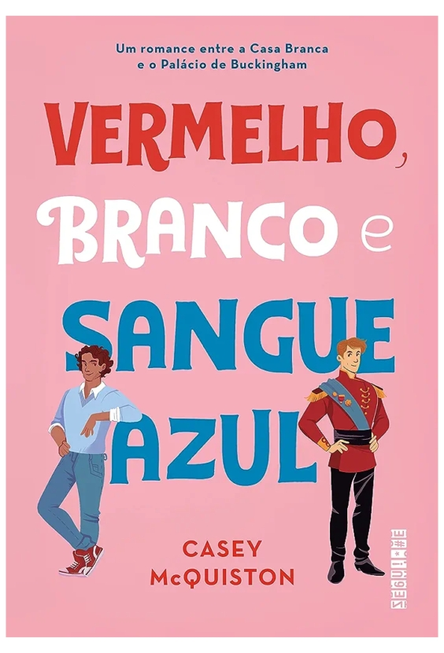

Vermelho, branco e sangue azul - Casey McQuiston
Sinopse
O que pode acontecer quando o filho da presidenta dos Estados Unidos se apaixona pelo príncipe da Inglaterra?
Quando sua mãe foi eleita presidenta dos Estados Unidos, Alex Claremont-Diaz se tornou o novo queridinho da mídia norte-americana. Bonito, carismático e com personalidade forte, Alex tem tudo para seguir os passos de seus pais e conquistar uma carreira na política, como tanto deseja. Mas quando sua família é convidada para o casamento real do príncipe britânico Philip, Alex tem que encarar o seu primeiro desafio diplomático: lidar com Henry, irmão mais novo de Philip, o príncipe mais adorado do mundo, com quem ele é constantemente comparado ― e que ele não suporta.
O encontro entre os dois sai pior do que o esperado, e no dia seguinte todos os jornais do mundo estampam fotos de Alex e Henry caídos em cima do bolo real, insinuando uma briga séria entre os dois. Para evitar um desastre diplomático, eles passam um fim de semana fingindo ser melhores amigos e não demora para que essa relação evolua para algo que nenhum dos dois poderia imaginar ― e que não tem nenhuma chance de dar certo. Ou tem?